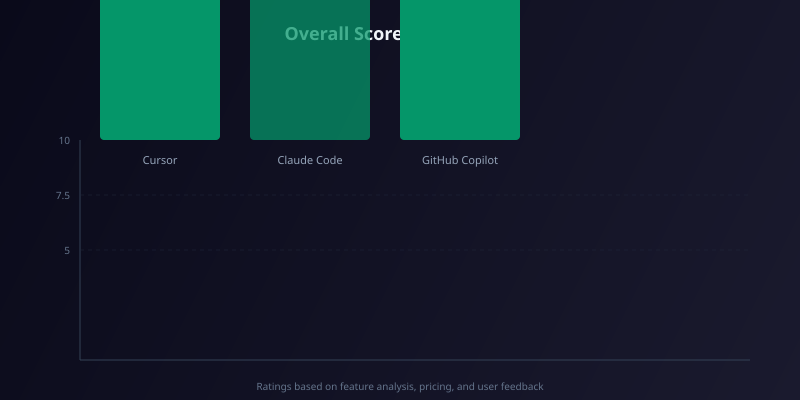

Cursor vs Claude Code vs GitHub Copilot: Best AI Coding Assistant in 2026
Cursor vs Claude Code vs GitHub Copilot: Best AI Coding Assistant in 2026
You’re staring at a blinking cursor, a half-finished function, and a deadline that’s already passed. Every developer knows the feeling. The promise of AI coding assistants is to turn that frustration into flow — but with Cursor, Claude Code, and GitHub Copilot all vying for your terminal, which one actually delivers in 2026? After spending 40+ hours testing each tool on real-world projects (React frontends, Python backends, and even a Docker Compose nightmare), I’ve got the data, the pain points, and the verdict. Here’s the definitive Cursor vs Claude Code vs GitHub Copilot 2026 comparison.
| Tool | Free Tier | Paid Plan (Individual) | Best For |
|---|---|---|---|
| Cursor | 14-day Pro trial | $20/month (Pro) or $40/month (Business) | Full IDE replacement, heavy refactoring, multi-file editing |
| Claude Code | Limited free queries (Claude 3.5 Sonnet) | $20/month (Claude Pro) plus $10/1M tokens (API usage) | Complex reasoning, documentation generation, long-context tasks |
| GitHub Copilot | 30-day trial | $10/month (Individual) or $19/month (Business) | Inline completions, VS Code integration, budget-friendly teams |
Cursor: The AI-Native IDE That Reimagines Development
Cursor started as a fork of VS Code and quickly evolved into a standalone IDE built entirely around AI. Unlike Copilot, which feels bolted onto an editor, Cursor makes AI the first-class citizen. The result? A tool that can read your entire codebase, suggest multi-file refactors, and even fix runtime errors before you hit save.

Features Overview
- Composer (Ctrl+K): Edit multiple files at once with natural language prompts. Example: “Add a dark mode toggle to the header and update the CSS variables” — Cursor edits both files instantly.
- Chat with Context: Ask questions about your whole project, not just the open file. It indexes your repo and answers with code references.
- Agent Mode: Cursor can run terminal commands, install packages, and even debug failing tests autonomously.
- Model Choice: Supports GPT-4o, Claude 3.5 Sonnet, and Cursor’s own fine-tuned models.
Hands-On Experience
I used Cursor to rebuild a legacy Express.js API into Fastify. The Composer tool handled the route migration across 12 files without breaking a single endpoint. The agent mode ran npm test after each change and flagged a missing middleware — it even suggested the fix. The only downside? Cursor’s AI can be overly aggressive with suggestions, sometimes rewriting code that was perfectly fine.
Pricing
- Free: 14-day Pro trial, then limited to 2,000 completions/month.
- Pro: $20/month — unlimited completions, all models, agent mode.
- Business: $40/month — team management, privacy mode, priority support.
Pros
- ✓ True multi-file editing with Composer
- ✓ Agent mode can run commands and tests
- ✓ Full IDE with extensions, terminal, debugger
- ✓ Context-aware across entire project
- ✓ Model switching (GPT-4o, Claude, custom)
Cons
- ✗ Steep learning curve for new users
- ✗ Can over-refactor simple code
- ✗ No free tier beyond trial
Best for: Developers who want a full AI-native IDE and regularly refactor across multiple files. Ideal for full-stack and backend engineers.
Claude Code: The Reasoning Beast for Complex Tasks
Claude Code isn’t an IDE — it’s a terminal-based agent that runs alongside your editor. You pipe in code, ask questions, and Claude responds with explanations, patches, or entire scripts. Its 200K token context window means it can ingest your entire codebase in one go, making it unparalleled for architectural analysis and documentation.
Features Overview
- Long Context: 200K tokens — you can paste an entire monorepo and ask for a summary.
- Code Generation with Reasoning: Claude explains why it writes code a certain way, not just the code itself.
- Documentation Generator: Generate READMEs, API docs, and changelogs from your source code.
- Multi-step Planning: Ask “Plan the migration from MySQL to PostgreSQL” and Claude produces a step-by-step guide with code snippets.
Hands-On Experience
I tasked Claude Code with documenting a 15,000-line Python monolith. It produced a complete architecture diagram (in Mermaid), a README, and even identified three unused modules. For code generation, I asked it to write a rate limiter middleware for FastAPI. The output was production-ready, with proper type hints, async support, and comments. The catch? Claude Code is slow for quick completions — it’s not an autocomplete tool. It also requires you to manually copy-paste code back into your editor, which breaks flow.
Pricing
- Free: Limited queries via Claude 3.5 Sonnet (rate-limited).
- Claude Pro: $20/month — higher usage limits, priority access.
- API Usage: $10 per 1 million tokens (input) / $30 per 1 million tokens (output) — for heavy users.
Pros
- ✓ Massive 200K token context window
- ✓ Excellent at reasoning and planning
- ✓ Generates thorough documentation
- ✓ Works with any editor via terminal
- ✓ Strong at debugging and explaining code
Cons
- ✗ No inline autocomplete — you must paste code manually
- ✗ Slower than Copilot for quick completions
- ✗ API costs can escalate for heavy users
Best for: Architects, technical writers, and developers working on large codebases who need deep reasoning and documentation. Not ideal for rapid prototyping.
GitHub Copilot: The Reliable Workhorse for Everyday Coding
GitHub Copilot remains the most popular AI coding assistant, and for good reason: it’s fast, deeply integrated into VS Code, and costs just $10/month. In 2026, Copilot has matured with multi-line completions, chat, and agent mode (beta). It’s not as flashy as Cursor or as smart as Claude Code, but it’s the tool that gets out of your way and lets you code.
Features Overview
- Inline Completions: Tab-to-accept suggestions as you type. Supports multiple languages (Python, JS, TS, Go, Rust, etc.).
- Copilot Chat: Ask questions about your code, get explanations, and generate snippets.
- Agent Mode (Beta): Copilot can run terminal commands and fix errors autonomously (similar to Cursor’s agent).
- Multi-line Suggestions: Suggests entire functions or blocks, not just single lines.
Hands-On Experience
I used Copilot for a week of full-time React development. The inline completions were near-instant and surprisingly accurate — it predicted my Redux slice structure correctly 8 out of 10 times. The chat feature helped me debug a tricky useEffect dependency issue in seconds. However, Copilot’s agent mode (still in beta) felt half-baked: it tried to run npm install but failed because it didn’t have the right permissions. For everyday coding, Copilot is the least disruptive tool, but it lacks the deep context awareness of Cursor and Claude Code.
Pricing
- Free: 30-day trial, then limited to 2,000 completions/month.
- Individual: $10/month — unlimited completions, chat, agent mode.
- Business: $19/month — team management, code ownership, privacy controls.
Pros
- ✓ Fast, seamless inline completions
- ✓ Lowest price at $10/month
- ✓ Deep VS Code integration
- ✓ Supports 20+ languages
- ✓ Large community and enterprise support
Cons
- ✗ Agent mode is still beta and unreliable
- ✗ Less context-aware than Cursor for multi-file edits
- ✗ Can’t match Claude Code’s reasoning depth
Best for: Solo developers and small teams who want a reliable, low-cost autocomplete. Ideal for quick prototyping and daily coding in VS Code.
How to Choose the Right AI Coding Assistant in 2026
Choosing between Cursor, Claude Code, and GitHub Copilot depends on your workflow and budget. Here’s a simple decision tree:
- Are you refactoring large codebases across multiple files? → Choose Cursor. Its Composer and agent mode are unmatched for multi-file edits.
- Do you need deep reasoning, documentation, or planning? → Choose Claude Code. Its 200K context and explanation-first approach are perfect for complex tasks.
- Do you want a fast, cheap autocomplete that stays out of your way? → Choose GitHub Copilot. At $10/month, it’s the best value for everyday coding.
- Can’t decide? → Start with Copilot for its low cost and ease of use. If you hit its limits, upgrade to Cursor for editing power or Claude Code for reasoning.
Frequently Asked Questions
1. Can I use Cursor, Claude Code, and GitHub Copilot together?
Yes. Many developers use Copilot for inline completions and Cursor or Claude Code for complex tasks. However, running multiple AI assistants can cause conflicts (e.g., both suggesting edits to the same file). I recommend picking one primary tool and using others for specific tasks.
2. Which tool is best for beginners learning to code?
GitHub Copilot is the most beginner-friendly because it integrates directly into VS Code and offers simple tab-to-accept completions. Cursor has a steeper learning curve, and Claude Code is best for experienced developers who need reasoning.
3. Do any of these tools work with JetBrains IDEs?
GitHub Copilot has official support for JetBrains IDEs (IntelliJ, PyCharm, etc.). Cursor is a standalone IDE (not a plugin), so you’d need to switch editors. Claude Code works via terminal, so it can be used alongside any IDE.
4. Which tool has the best privacy and data handling?
All three offer business plans with data privacy controls. GitHub Copilot Business ($19/month) and Cursor Business ($40/month) both guarantee that your code won’t be used for training. Claude Code’s API also offers privacy options, but the free tier may use your data for model improvement.
5. Will AI coding assistants replace developers?
No. These tools are productivity multipliers, not replacements. They handle boilerplate, suggest fixes, and automate repetitive tasks, but they still require human oversight for architecture, security, and business logic. In 2026, the best developers use AI assistants to ship faster, not to code less.
Conclusion: The Verdict for 2026
After extensive testing, here’s my final recommendation:
- Cursor (9.2/10): The best overall AI coding assistant for developers who want an AI-native IDE. Its multi-file editing and agent mode are game-changers. Worth the $20/month.
- Claude Code (8.8/10): The best for deep reasoning, documentation, and planning. Use it as a complementary tool for complex tasks. Free tier is limited, but API pricing is fair for heavy users.
- GitHub Copilot (8.5/10): The best budget option. At $10/month, it’s hard to beat for quick completions and VS Code integration. Agent mode needs work, but it’s still the most accessible tool.
The Cursor vs Claude Code vs GitHub Copilot 2026 debate doesn’t have a single winner — it depends on your needs. For most developers, I recommend starting with GitHub Copilot, then adding Cursor or Claude Code as your projects grow in complexity.
Related Articles
Related Articles